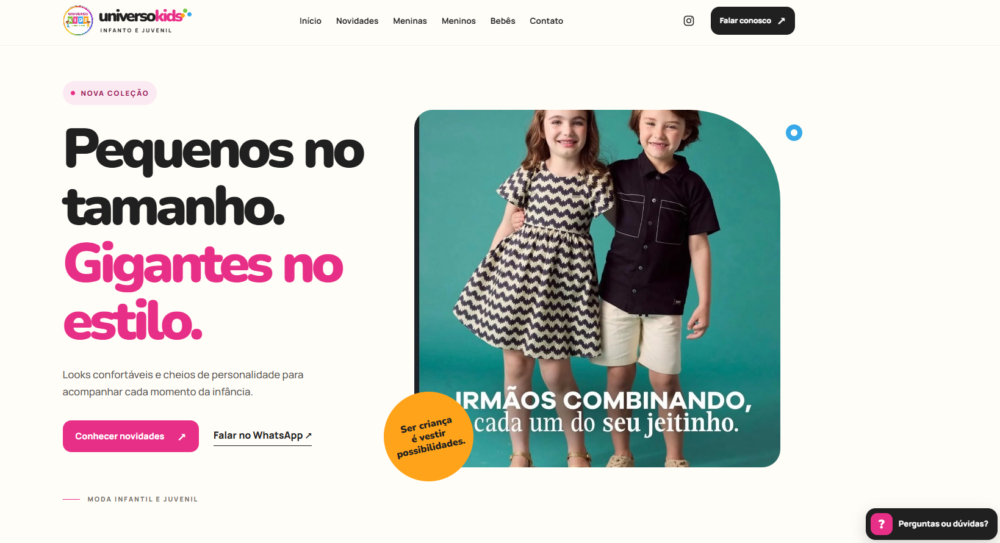
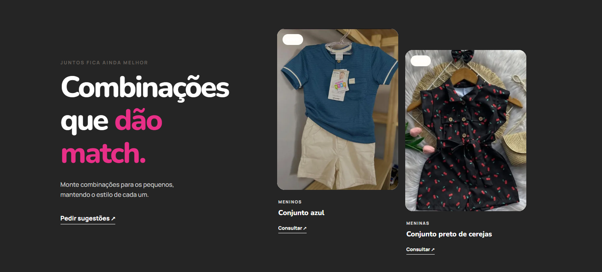
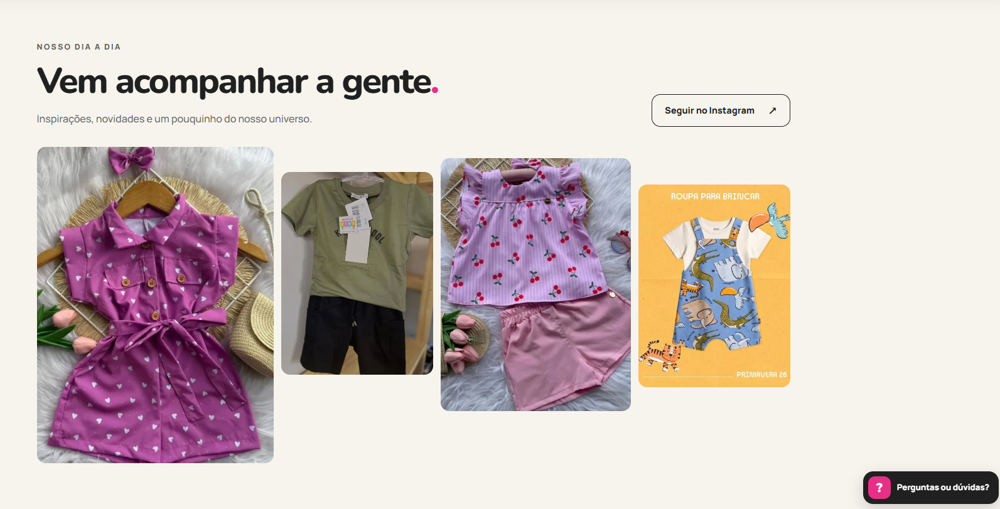
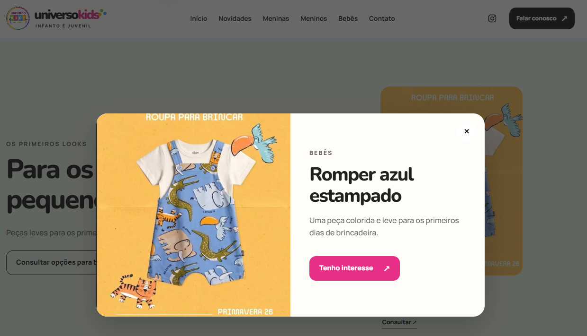

O desafio
Apresentar produtos infantis de forma divertida e organizada, sem perder clareza para quem busca tamanho, modelo e disponibilidade.
Landing page para moda infantil e juvenil desenvolvida para transformar categorias, novidades e atendimento em uma jornada clara para famílias.
Apresentar produtos infantis de forma divertida e organizada, sem perder clareza para quem busca tamanho, modelo e disponibilidade.
Usar blocos por categoria, vitrine de novidades e uma identidade visual expressiva para conduzir a descoberta sem excesso de navegação.
Manter chamadas diretas para WhatsApp em pontos relevantes da jornada, aproximando a consulta do momento de interesse.
A landing organiza descoberta, produtos e contato em uma experiência pensada para navegação rápida em diferentes telas.

A proposta de valor, os CTAs e a imagem editorial trabalham juntos para comunicar o universo da marca logo no primeiro contato.

A seção sugere combinações entre peças infantis e cria uma forma mais editorial de explorar produtos de categorias diferentes.

O bloco de dia a dia combina imagens de produtos e chamada para Instagram, estendendo a descoberta para além do catálogo.

O modal apresenta o item em contexto e oferece uma ação direta para demonstrar interesse, reduzindo a distância entre descoberta e atendimento.
As categorias ajudam cada família a encontrar opções adequadas com poucos passos.
Produtos recentes ganham contexto visual e ações de consulta objetivas.
A estrutura prioriza leitura, toque e acesso ao contato também em telas menores.
O WhatsApp é apresentado como extensão natural da descoberta de produtos.
Quer conversar sobre vitrines digitais e experiências responsivas?
Entrar em contato